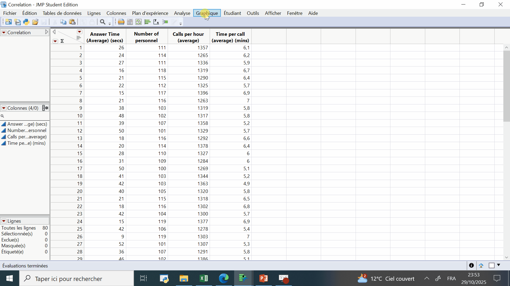

Procédure 20 · Graphiques
Nuage de points
Procédure pas à pas
- Ouvrir Graphique → Constructeur de graphiques.
- Placer la variable explicative sur X et la variable réponse sur Y.
- Choisir les points pour représenter les observations.
- Valider puis examiner forme, direction et points atypiques.
Jeu de données / résultat
Fichier cité : Correlation.xls
Point de vigilance : La séquence de menu est celle du Constructeur de graphiques présenté au début du support ; ces diapositives ne donnent pas d’étapes supplémentaires.
Démonstrations animées dans JMP
Animations extraites du PowerPoint « Lean Six Sigma avec JMP 003 ». Elles complètent les étapes numérotées ci-dessus.
